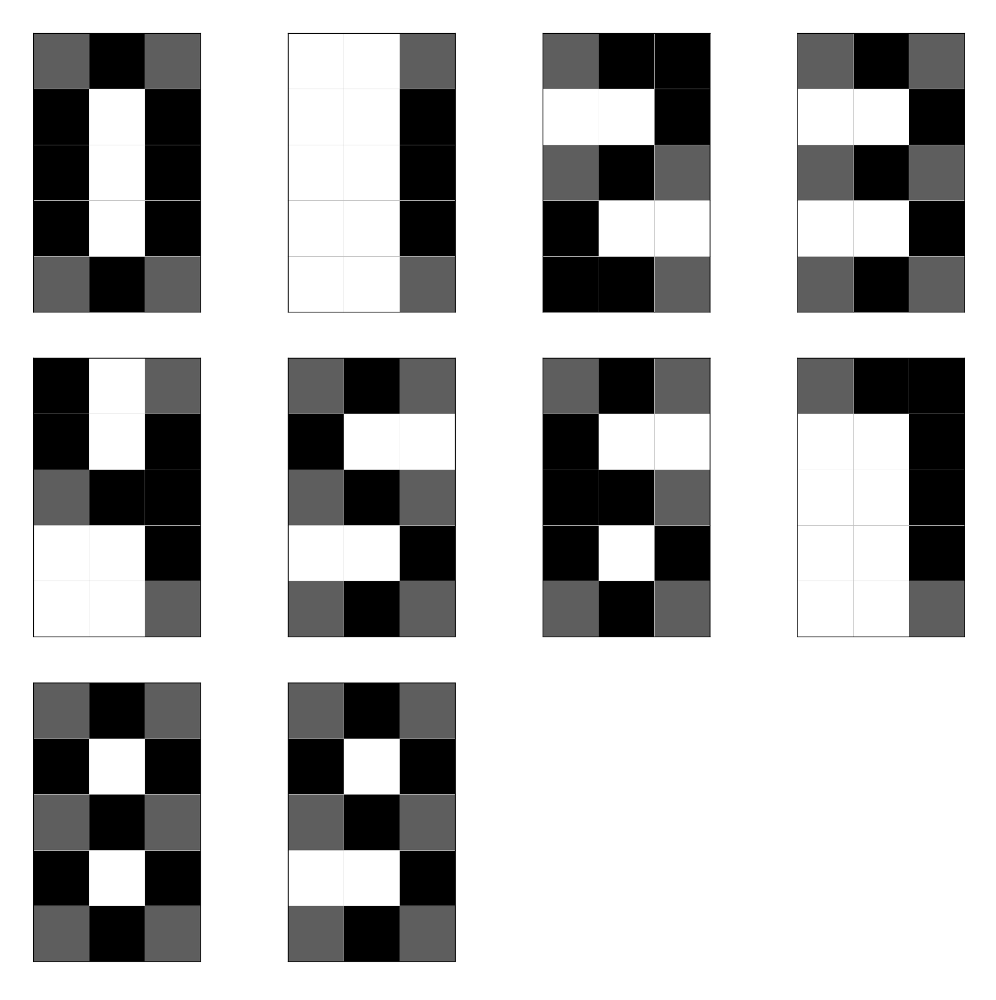

La última práctica es una demostración básica de aprendizaje a máquina: vamos a reconocer dígitos de imágenes pequeñas en blanco y negro con una red neuronal. El elemento básico de una red neuronal es un perceptrón que esencialmente es un híperplano (una línea si nos limitamos a dos dimensiones) que busca colocarse en la frontera que separa las entradas verdaderas y las entradas falsas. La dimensión $d$ del perceptrón es el largo del vector $\textbf{x}$ que toma como entrada, y su estado interno se representa con otro vector $\textbf{w}$ que contiene sus pesos. Para responder a una salida proporcionada a ello, el perceptrón calcula el producto interno de $\textbf{x} \cdot \textbf{w}$, es decir $\sum_{i = 1}^d x_i w_i$, y si esta suma es positiva, la salida del perceptrón es verdad, en otro caso es falso [12]. Para agarrar la onda con los perceptrónes, haremos primero uno más sencillo cuyo jale es identificar si $x > y$ para puntos en dos dimensiones, ya que así es fácil para nosotros visualizar lo que le pasa al perceptrón durante el entrenamiento.
$ Rscript perceptron.R
[1] "Bien"
[1] "27 18"
[1] "Mal"
[1] "0 0"
$ python3 perceptron.py
Bien
19 24
Mal
0 0
Cada error causa un movimiento en el perceptrón mientras los resultados correctos no le mueven. Las correcciones se hacen gradualmente más pequeñas por la reducción de la tasa de aprendizaje. Terminando el entrenamiento, la línea divisora ya no se mueve. En la fase de prueba, simplemente se clasifican las coordenadas recibidas como verdaderas ($x > y$) o falsas (en otro caso).
Usamos quince pixeles por dígito, tres de ancho y cinco de
altura. Queremos que el perceptrón diga FALSE
cuando se la proporciona una imágen que es un cero
y TRUE cuando la imagen contiene un uno, pero
necesitamos extender esta idea a los diez dígitos 0, 1, 2, 3,
4, 5, 6, 7, 8, 9. Esto significa que ocupamos asociar los
números a vectores de largo fijo (una posición por
perceptrón) de verdades y falsos, lo que se logra
fácilmente con sus representaciones en base
dos que se conocen como números binarios.
Cada entero positivo se puede representar como una suma única de potencias de dos. Por ejemplo, siete es lo mismo que uno más dos más cuatro, 20 es 16 + 4 y 100 = 64 + 32 + 4.
Esto se extiende a otras bases: por ejemplo, el sistema octal representa números como sumas de múltiples (mod 8) de potencias de ocho. De hecho, así funciona el sistema decimal también: 123 es una vez diez al cuadrado más dos veces diez (elevado a uno) más tres veces uno (diez elevado a cero).
Para convertir un entero en una secuencia de bits que indican cuáles potencias están presentes (1 o verdad) y cuáles están ausentes (0 o falso) de la suma (no teniendo más opciones ya que los posibles residuos en división entre dos son solamente cero y uno), simplemente probamos cuáles potencias le caben:
binario <- function(d, l) {
b <- rep(FALSE, l)
while (l > 0 | d > 0) {
b[l] <- (d %% 2 == 1)
l <- l - 1
d <- bitwShiftR(d, 1)
}
return(b)
}
decimal <- function(bits, l) {
valor <- 0
for (pos in 1:l) {
valor <- valor + 2^(l - pos) * bits[pos]
}
return(valor)
}
library(testit)
l <- 4
for (i in 0:9) {
print(i)
b <- binario(i, l)
print(b)
assert(i == decimal(b, l))
}
$ Rscript binario.R
[1] 0
[1] FALSE FALSE FALSE FALSE
[1] 1
[1] FALSE FALSE FALSE TRUE
[1] 2
[1] FALSE FALSE TRUE FALSE
[1] 3
[1] FALSE FALSE TRUE TRUE
[1] 4
[1] FALSE TRUE FALSE FALSE
[1] 5
[1] FALSE TRUE FALSE TRUE
[1] 6
[1] FALSE TRUE TRUE FALSE
[1] 7
[1] FALSE TRUE TRUE TRUE
[1] 8
[1] TRUE FALSE FALSE FALSE
[1] 9
[1] TRUE FALSE FALSE TRUE
Python obviamante ya cuenta con rutinas para todo esto.
l = 4
for i in range(9):
print('{0:04b}'.format(i))
assert i == int(bin(i), 2)
$ python3 binario.py
0000
0001
0010
0011
0100
0101
0110
0111
1000
Además de codificar las respuestas deseadas, necesitamos poder generar entradas que no sean todas idénticas para que haya algo de reto en obtener la respuesta correcta. Por simplicidad, vamos a crear imágenes de dígitos de una manera probabilisista a partir de plantillas. Los pixeles que son negros en la plantilla serán puestas casi siempre, mientras los grises ocasionalmente, y los blancos solamente como ruido aleatorio de poca frecuencia.
Codificamos esto en un archivo de texto usando las iniciales de los colores para indicar cuál pixel es cuál, yendo por renglones.
Ya que necesitamos cuatro bits de salida, ya no podemos con un sólo perceptrón, sino vamos a ocupar cuatro: cada uno recibe la misma entrada y produce su salida de forma independiente.
$ Rscript ann.R
0 1 2 3 4 5 6 7 8 9 <NA>
0 36 0 1 0 0 0 0 0 0 0 0
1 0 23 1 0 0 0 0 0 0 0 0
2 0 0 27 0 0 0 0 0 0 0 4
3 0 1 0 29 0 0 0 0 0 0 1
4 0 0 0 0 27 1 0 0 0 0 2
5 0 0 0 0 0 24 0 0 0 0 0
6 0 0 0 0 2 1 32 0 0 0 1
7 0 0 0 0 0 1 0 24 0 0 0
8 4 0 0 0 0 0 0 0 30 0 0
9 0 2 0 0 0 0 0 0 1 25 0
$ python3 ann.py
0 1 2 3 4 5 6 7 8 9 NA
0 30 0 0 1 0 0 0 0 0 0 1
1 0 38 0 0 0 2 0 0 0 0 0
2 0 0 21 0 0 0 0 0 0 0 6
3 0 0 0 25 0 0 0 0 0 0 7
4 0 0 0 1 21 1 0 0 3 0 1
5 1 0 1 0 0 17 0 0 0 0 6
6 0 0 0 0 1 0 23 0 0 0 6
7 0 4 0 0 0 1 0 17 0 0 0
8 1 0 0 0 4 0 0 0 24 0 2
9 0 17 0 0 0 6 0 0 1 9 1
En R, viendo los ceros, por ejemplo, uno fue interpretado como un dos y los demás fueron correctamente identificados como ceros; para los seis, dos se interpretaron como cuatros, uno como un cinco, y además hubo una cadena binaria correspondiendo a valores entre 10 y 15. En general, la red sencilla de una sola capa está clasificando la gran mayoría de los dígitos correctamente. En Python, la situación es similar: solamente un cero fue un inválido, todos los unos se interpretaron bien, pero hubo broncas con cuatro de los dos, etc.
Estudia de manera sistemática el desempeño de la red
neuronal en términos de su puntaje F (ngb), variando a las tres en
un experimento
factorial adecuado.
Como un primer reto, extiende y entrena la red neuronal para que reconozca además por lo menos doce símbolos ASCII adicionales, aumentando la resolución de las imágenes a $5 \times 7$ de lo original de $3 \times 5$ (modificando las plantillas de los dígitos acorde a este cambio).
En el segundo reto, agrega ruido sal-y-pimienta en las
entradas para una combinación ngb con la cual la red
desempeña bien; este tipo de ruido se genera cambiando con una
probabilidad $p_r$ los pixeles a blanco o negro (uniformemente al
azar entre las dos opciones). Estudia el efecto de $p_r$ en el
desempeño de la red (no importa si se hace esto con la red de la
tarea base o la red extendida del primer reto).
https://satuelisa.github.io/simulation/p12.html